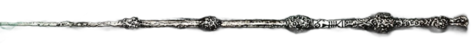

<nav class="navbar navbar-expand-lg navbar-dark bg-dark header">
    <div class="container-fluid">
      <div class="collapse navbar-collapse" id="navbarSupportedContent">
        <ul class="navbar-nav me-auto mb-2 mb-lg-0">
          <li class="nav-item" routerLinkActive="activo">
            <a class="nav-link" aria-current="page" routerLinkActive="activo" [routerLinkActiveOptions]="{exact: true}" routerLink="wizards">Wizards</a>
          </li>
        </ul>
      </div>
    </div>
  </nav>
  <div id="wander" class="wander" (click)="goBack()">
     
    <div class="magic"></div>
  </div>